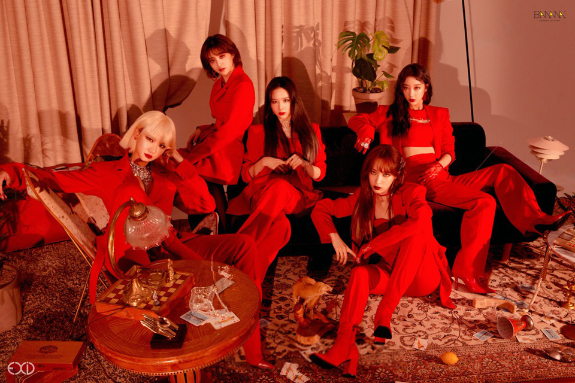

EXID is a South Korean girl group formed in 2012.
The group currently consists of five members: Solji, LE, Hani, Hyelin and Jeonghwa. EXID debuted in February 2012, with the single "Whoz That Girl". Though the album gained some attention, it was not until 2014 that the group unexpectedly gained popularity with the single "Up & Down", which reached number one on the Gaon Singles Chart four months after release due to a fan-recording of a live performance becoming a viral video.